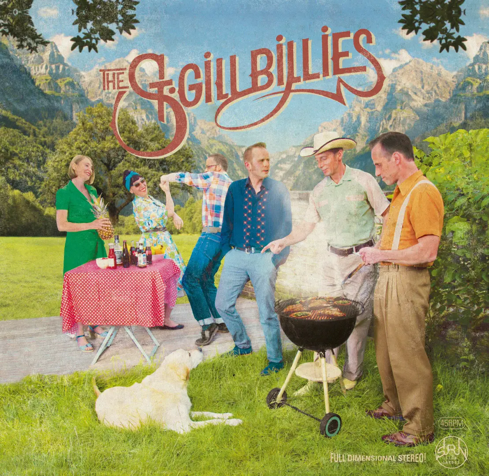

Les tueurs du Brabant
Podcast produit par la RTBF et Vivacité - janvier 2023


The Saint-Gilbillies



Eddy Tornado et les Scandaleux
La Petite Nina
Handmade Clothing Design


La Frénésie
Flower & Vintage Shop -


Boem
Flower & Vintage Shop